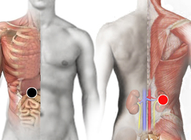

Catarro común
Par
Pares
vesícula - riñón (D)
muñón - muñón
5ta. cervical - esternocleidomastoideo

Generalidades:
Virus ARN . Causado por una gran variedad de Virus y Bacterias que se alojan en las vías respiratorias, Se confunde con Influenza o Dengue . Rinitis Vasomotora, el polvo, el polen, o por uso de descongestionantes. Presente por más de 4 días. Se puede esconder ahí el VIH, produce disfunción renal y provoca síndromes relacionados con la función renal.